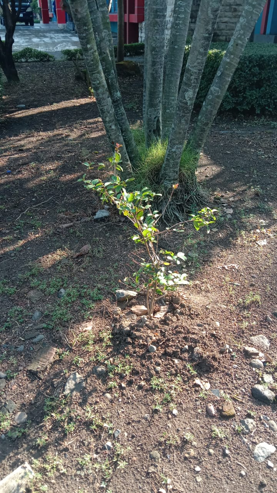

🌿 Pucuk Merah (Syzygium myrtifolium)

Sejarah
Pucuk merah (Syzygium myrtifolium) adalah tanaman asli dari Bangladesh, Borneo, Jawa,
Semenanjung Malaya, Myanmar, Filipina, Sumatra, dan Thailand.
Tanaman ini telah tumbuh secara alami di wilayah Asia Tenggara selama ribuan tahun
dan telah menjadi bagian penting dari ekosistem lokal.
Pucuk merah juga digunakan sebagai tanaman hias dan dalam pengobatan tradisional.
Klasifikasi Ilmiah
- Domain: Eukaryota
- Kerajaan: Plantae
- Klad: Tracheophyta
- Klad: Angiospermae
- Klad: Eudikotil
- Klad: Rosid
- Ordo: Myrtales
- Famili: Myrtaceae
- Genus: Syzygium
- Spesies: Syzygium myrtifolium
Detail Penjelasan
- Akar: Akar tunggang yang merambat dan terus membesar, berwarna coklat.
- Batang: Batang bulat, berkayu, memiliki kambium, bisa mencapai ketinggian 5 meter.
- Daun: Oval dengan ujung lancip, berwarna merah saat muda dan hijau saat dewasa.
- Bunga: Bunga majemuk, putik berwarna putih, tangkai sari lebih panjang dari putik.
- Buah: Bulat agak pipih, hitam mengkilap saat masak.
Manfaat
- Menyerap Karbon Dioksida: Mampu menyerap CO₂ dalam jumlah besar.
- Mencegah Longsor: Akar tunggang kokoh membantu mencegah longsor.
- Menyimpan Cadangan Air: Akar menyimpan air, bermanfaat di musim kering.
- Tanaman Hias: Populer sebagai tanaman hias di pekarangan rumah dan perkantoran.
Sumber Informasi